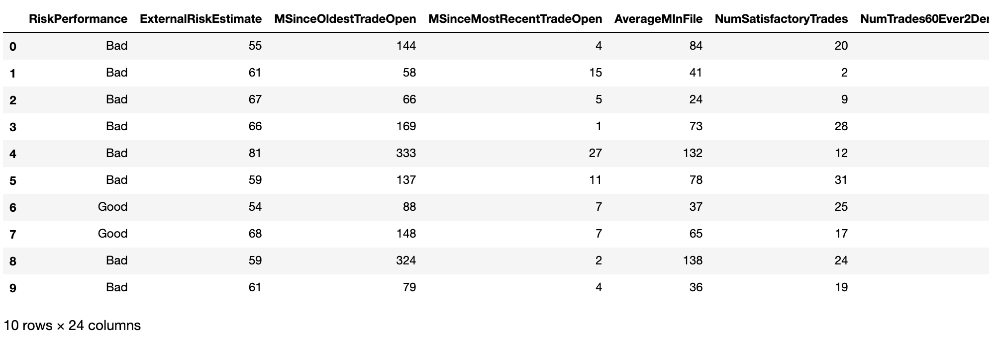
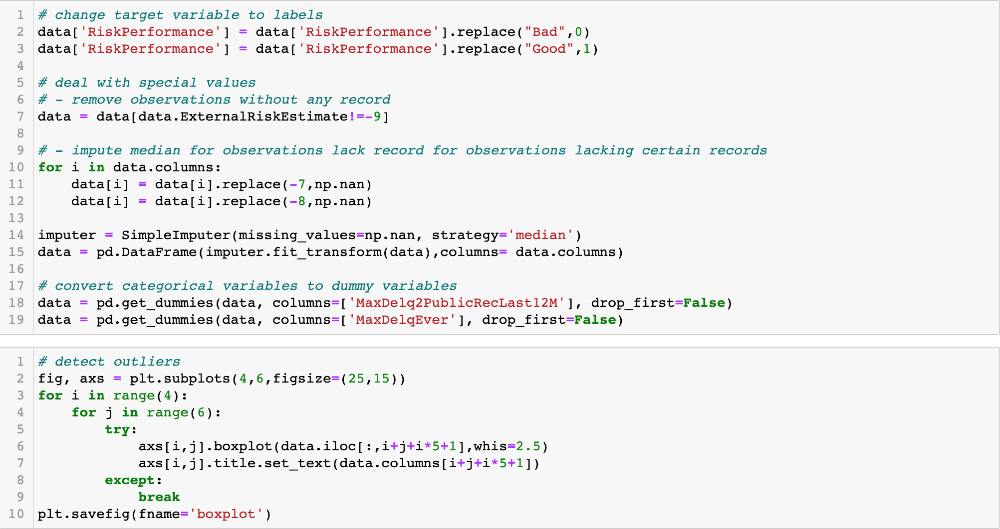
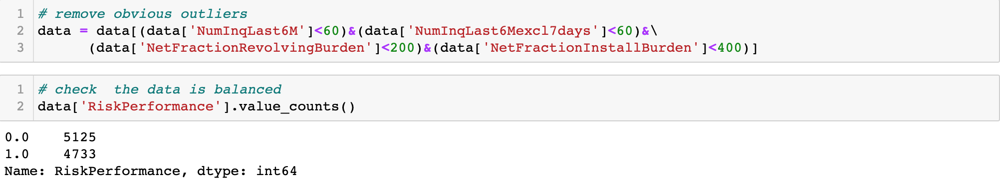
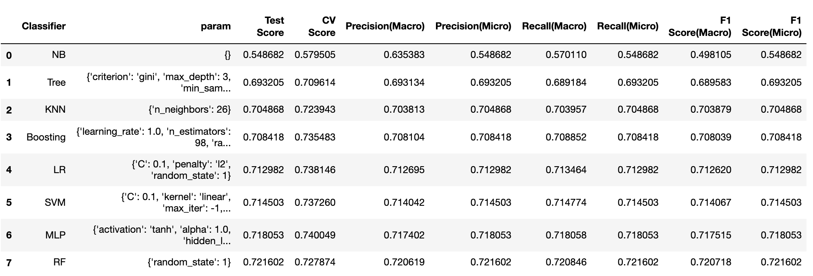
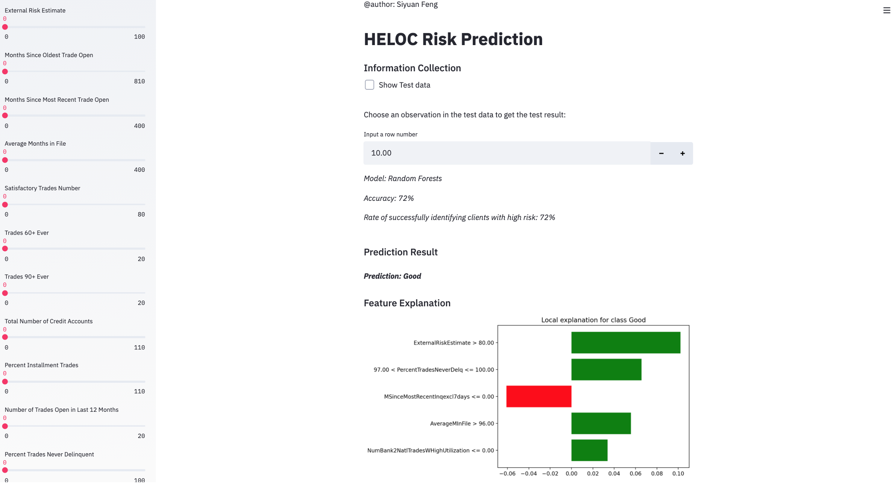

HELOC Risk Prediction
HELOC stands for Home Equity Line of Credit. It is a loan set up as a line of credit for some maximum draw, rather than for a fixed dollar amount. For example, using a standard mortgage you might borrow $200,000, which would be paid out in its entirety at closing. Using a HELOC instead, you receive the lender’s promise to advance you up to $200,000, in an amount and at a time of your choosing.
HELOCs are convenient for funding intermittent needs, such as paying off credit cards, making home improvements, or paying college tuition. Because the upfront costs are relatively low, many people choose HELOC as a source of funds. The challenge faced by financial institutions is how to identify the clients that are not able to repay the loan, which is critical for institutions to minimize the risk. To overcome this challenge, an increasingly popular approach is machine learning-based methods, which are more time-efficient and cost-effective than manual annotation.
However, since financial institutions are required to provide explanations to clients about their rating, I built and compared several models, then chose the one with high prediction performance and interpretability using real-world financial datasets provided by FICO. Also, for users’ convenience, I created an interactive interface using Streamlit which also allows users to give clear explanations for the rating.
Data Preprocessing
The dataset contains HELOC applications made by real homeowners, in which RiskPerformance is the target binary variable. The label “Good” indicates that clients made payments without being more than 90 days overdue, whereas “Bad” indicates that they made payments 90 days past due or worse at least once over a period of 24 months since the credit account was opened. All the other predictor variables are quantitative or categorical variables representing a specific kind of trade feature of the homeowners. 
After looking at the dataset, I found that there are three kinds of missing values in the dataset: “-9” represents No Bureau Record or No Investigation, “-8” represents No Usable/Valid Trades or Inquiries, and “-7” represents Condition not Met (e.g. No Inquiries, No Delinquencies). Since “-9” means there is no referencing information at all for all features and “-8” or “-7” means there are only several missing values, I decided to remove observations containing “-9” and replace “-8” and “-7” with the median. What’ more, I also turned categorical variables into dummy variables, removed obvious outliers as well as standardized all the values so the algorithms would work better on the dataset.  
After checking the remaining observations, I found that there are 5125 “Bad” and 4733 “Good” values in the target variables, the dataset is quite balanced, so next, I began to build some models and tried to find the one with the best accuracy.
Modeling
Here I choose several models like SVM, Logistic Regression, KNN, Naïve Bayes, Decision Tree, Random Forests, Adaboosting, and Multi-Layer Perceptron. They are commonly used in classification problems and have their pros and cons. For example, LR is simple, fast, and interpretable but easy to underfit, while ensembling learning makes the model more robust and stable but reduces interpretability and is time-consuming.
Due to the high risk and loss brought by clients who are not able to repay the loan, I choose Recall combined with accuracy as the metrics to evaluate the model. After hyper-parameter tuning and comparing the performance between different models, I found that Random Forests outperforms others with the highest test accuracy and Recall of 72.16%, so I decided to use this model to predict and visualize the results to users. 
Prediction Interpretation and Interface Design
Considering that this model is mainly used by financial institutions to identify the clients with “Bad” Performance, I designed an interactive interface that users can simply input the historical information of the clients and get the prediction as well as the contribution of different features using Streamlit combined with LIME. 
Users can click the checkbox to see the test data and choose a certain client by inputting the index or drag the sliders to input the values manually. Then the prediction result will show on the page along with the feature explanation. For example, here we choose the 10th client in the test data, the prediction of him is “Good”, and the feature “External Risk Estimate” contributes most to the “Good” prediction.